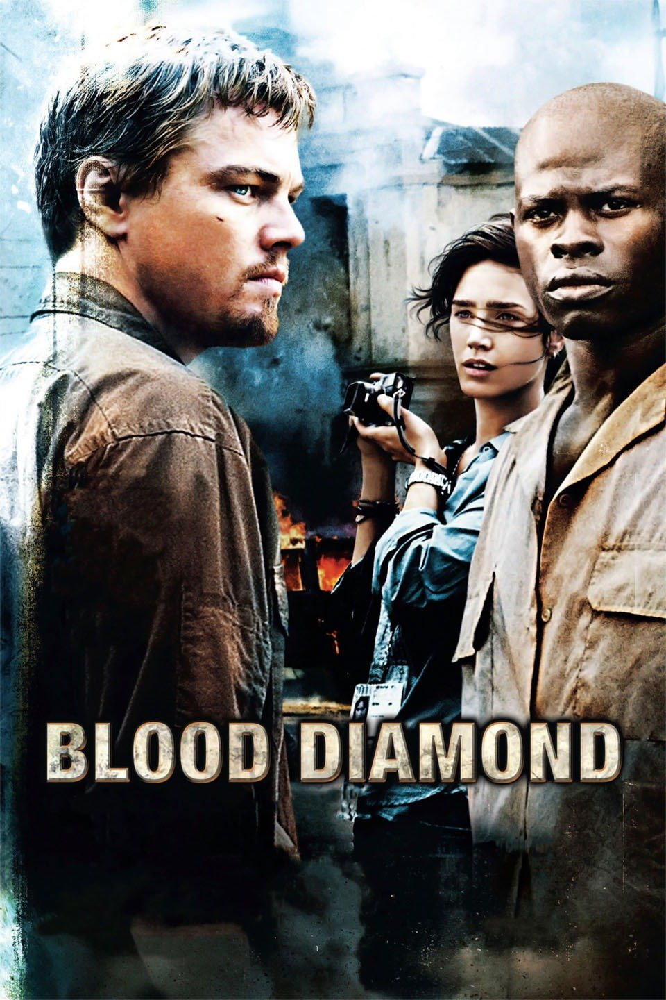
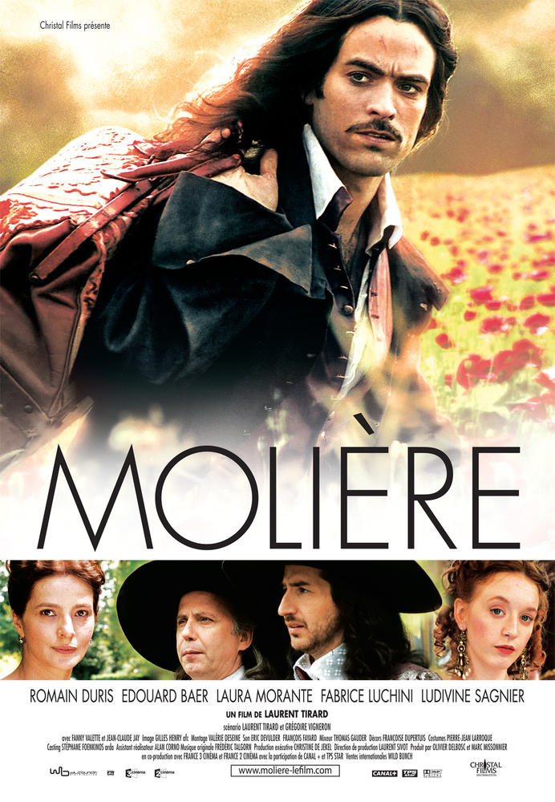
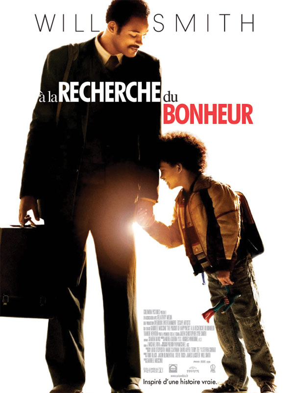
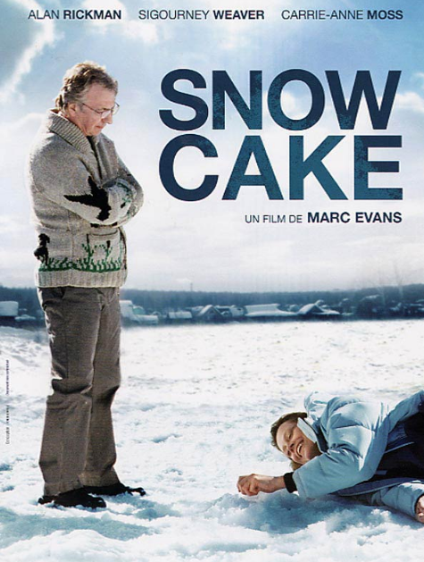

| Nom du Films | Resume | Catégorie | Durée | Realisateur | Acteurs | Salle |
|---|---|---|---|---|---|---|
|

|
Blood Diamond est un film dramatique d'action de 2006coproduit et réalisé par Edward Zwick et mettant
en vedette Leonardo DiCaprio , Jennifer Connelly et Djimon Hounsou . Le titre fait référence aux diamants
du sang , qui sont des diamants extraits dans des zones de guerre et vendus pour financer des conflits, et
ainsi profiter aux chefs de guerre et aux sociétés diamantaires du monde entier.
|
Aventure | 2h 22min | Edward Zwick |
MK2 Bibliothèque 128-162 avenue de France 75013 Paris - Metro Ligne 14, Bibliothèque François Mitterrand |
|
| Molière

|
Molière est un film de 2007 du réalisateur français Laurent Tirard et mettant en vedette Romain Duris
dans le rôle de Molière . Il est sorti en Europe en janvier 2007 et aux États-Unis en juillet 2007.
Il a été présenté au 29e Festival international du film de Moscou où Fabrice Luchini a remporté le
Silver George du meilleur acteur.Le scénario a été co-écrit par Tirard et Grégoire Vigneron
|
Comédie dramatique | 2h | Laurent Tirard |
Gaumont Gobelins 58, av. des Gobelins 75013 Paris - Metro Gobelins, Place-d’Italie |
|
|
À la recherche du bonheur (The Pursuit of Happyness)

|
À la poursuite du bonheur est inspiré d'une histoire vraie, celle de Chris Gardner. Le titre original de
l'adaptation cinématographique américaine est le même que celui du livre autobiographique publié en 2006 :
The Pursuit Of Happiness. Chris Gardner est né dans le Wisconsin, en 1954. D'une famille aux revenus
modérés, il se lance dans une carrière médicale qui se terminera dans la finance. Chris se retrouvera
bientôt à la rue, seul avec son fils[réf. nécessaire]. Mais grâce à sa volonté, inspirée par la force
de caractère de sa propre mère qui lui disait étant enfant "tu ne peux compter que sur toi-même, la cavalerie
n'est pas en train de venir à ta rescousse", il réussira à gravir les échelons de la galère jusqu'à la fortune.
En 1987, il fonda sa propre maison de courtage Gardner, Rich & Co. à Chicago avec un capital de 10 000 $,
avec pour simple mobilier, une table qui faisait office de bureau dans la journée, sur laquelle il servait
également les repas. Chris Gardner n'a pas oublié les années de vaches maigres, et dépense une partie de sa
fortune pour venir en aide aux démunis tant à San Francisco qu'à Chicago ou en Afrique du Sud. Il a même préféré,
plutôt que de répondre à l'invitation de la première du film le 15 décembre 2006, être l'orateur invité à la fête
de Noël de JHT Holdings, Inc à Kenosha, dans le Wisconsin, l'État où il est né en 1954.
|
Comédie dramatique | 1h 58min | Gabriele Muccino |
MK2 Bibliothèque 128-162 avenue de France 75013 Paris - Metro Ligne 14, Bibliothèque François Mitterrand |
|
L’ile aux trÉsors

|
L'Île aux trésors est un film français réalisé par Alain Berberian, sorti en 2007, et librement inspiré de L'Île au trésor,
le célèbre roman de Stevenson.
|
Aventure | 1h 40min | Alain BerbÉrian |
UGC Gobelins 66, av. des Gobelins 75013 Paris - Metro Place-d’Italie, Gobelins |
|
|
Snow Cake

|
SNOW CAKE est un 2006 britannique canadienne indie comédie romantique film dramatique réalisé
par Marc Evans et mettantvedette Alan Rickman , Sigourney Weaver , Carrie-Anne Moss ,
Emily Hampshire et Callum Keith Rennie . Il est sorti le 8 septembre 2006 au Royaume-Uni.
Tourné à Wawa, en Ontario , Snow Cake est un drame sur la relation entre Linda autiste (Weaver)
et le touriste britannique Alex (Rickman), qui a changé d'avis après un accident de voiture mortel
impliquant lui-même et la fille de Linda, Vivienne (Hampshire).
|
Drame | 1h 52min) | Marc Evans |
MK2 Bibliothèque 128-162 avenue de France 75013 Paris - Metro Ligne 14, Bibliothèque François Mitterrand |